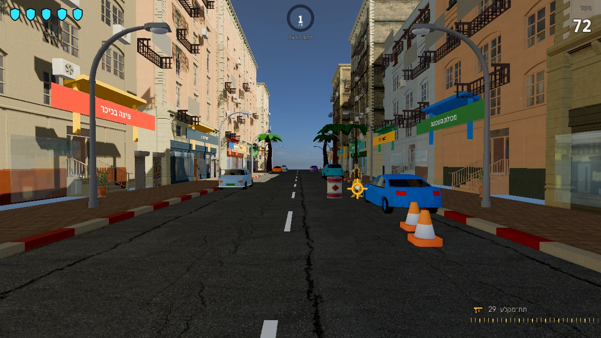
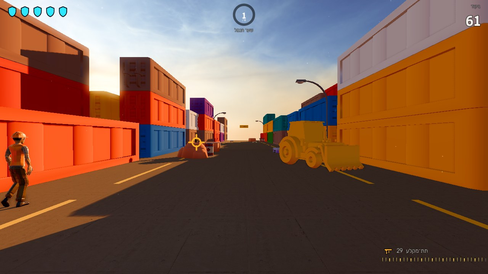
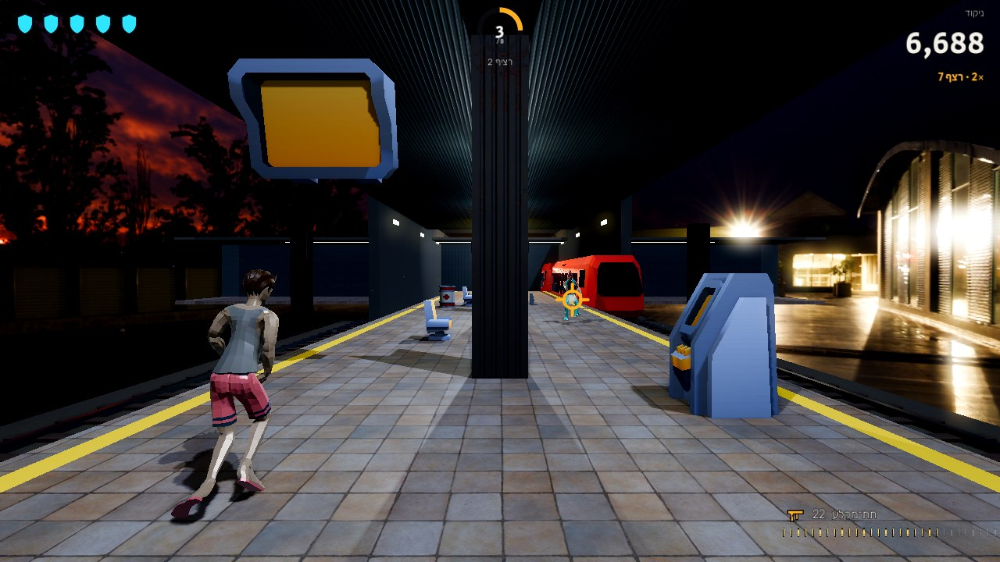
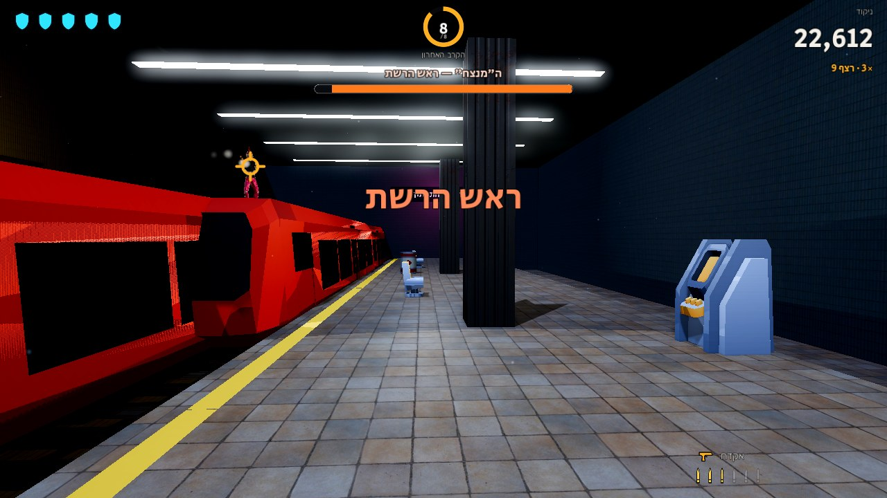

מתוך המשחק




מה במשחק
ירי מדויק
פגיעה בנשק מנטרלת בלי לפגוע, פגיעה בראש שווה יותר, וכל שבריר שנייה נחשב.
בחירת מסלול
בכל שלב יורים בשלט כדי לבחור ענף — שני מסלולים שונים עד הבוס.
בני ערובה ואזרחים
חילוץ נקי מזכה בבונוס. פגיעה באזרח עולה ביוקר.
גרפיקה של מחשב
תאורה גלובלית, השתקפויות, ערפל נפחי, צללים רכים ו־120 פריימים בשנייה.
דרישות מערכת
כרטיס מסך
עם תמיכה ב־VulkanGTX 1060 ומעלהמומלץ: RTX 2060 Super
מעבד וזיכרון
64 ביט4 ליבות · 8GB4GB זיכרון גרפי
מקום פנוי
בדיסק1.5GBהורדה של כ־500MB
מערכת ושליטה
Linux או Windows, 64 ביטעכבר ומקלדתמסך 1080p ומעלה
התקנה ב־Linux Mint
מורידים
$ wget https://github.com/israelb014/mishmeret-layla-pc/releases/download/v1.0.0/MishmeretLayla-linux.tar.gzמחלצים
$ mkdir -p ~/Games/MishmeretLayla && tar -xzf MishmeretLayla-linux.tar.gz -C ~/Games/MishmeretLaylaמוסיפים לתפריט ומשחקים
$ ~/Games/MishmeretLayla/install-desktop-entry.sh && ~/Games/MishmeretLayla/MishmeretLayla.x86_64